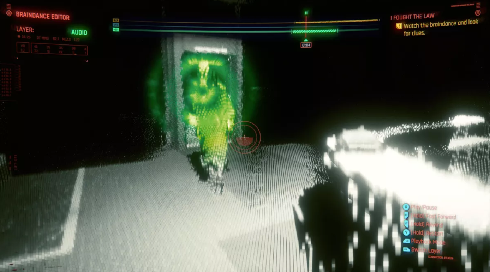

My response:
In today's world of rapid technological development, I am sincerely grateful for the achievements of the great men and women of the past. Everything in our modern human life comes from them. Or rather, we need to be grateful to history. But while we remember history, do we need to continue to record what is happening now as the history of the future?
After reading this article, I have no doubt that in the future we will be able to record things around us as fast as neural currents process information. Not just our bank accounts, reading records, but a more detailed and comprehensive kind of recording technology. For example: when you take a picture on the street in Times Square, you get not just a static picture, but when you view the picture, you can look at everyone around you at 360 degrees. This kind of photo will be so detailed that the dust under your feet are clearly visible. I fantasize that along with the progress of the times, such a way of recording will surely come. This will be a better record of history for us in the future.